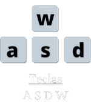
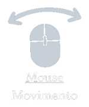
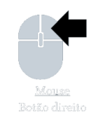
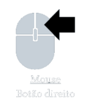

OLHE AO REDOR
Movimente a cabeça horizontalmente para olhar ao redor


O jogador acorda em sua cama mais cedo do que deveria. A sombra na janela, a porta calmamente fechada, o tic-tac silêncioso do seu relógio te contam: você está novamente preso em sua paralisia do sono.
Sua cabeça se move de um lado para o outro, seus olhos fecham e você até consegue controlar sua respiração, porém não consegue sair. A realidade e sua mente se fundem em uma só e você começa a ver coisas.
Feche os olhos, controle o medo para sobreviver até seu despertador tocar.
O jogador controla um personagem que está tendo uma paralisia do sono e, durante esse tempo, será assombrado - ou será só sua imaginação - enquanto não pode se mover.
Para isso o jogador precisará contar com poucos movimentos para acalmar e não ser pego pelo medo ou pela terrível criatura que parece querer possuí-lo, assustá-lo ou, talvez, até matá-lo.
Movimente a cabeça horizontalmente para olhar ao redor

Feche os olhos para que as atividades pararem de acontecer
 

controle seus pensamentos no ritmo do relógio ao tomar um susto
Use o menu de pause para arrumar suas configurações ou desistir do jogo
O personagem deverá sobreviver da hora que acordou - onde será indicado no relógio - até as 6h da manhâ. O tempo no jogo passará mais rápido, o que significa que 1h dentro do jogo equivale a 2 minutos da vida real
Algumas coisas podem acontecer com o tempo, como gavetas se abrirem, portas se mexerem ou uma cadeira de balanço começar a se mover.
Para sobreviver a este tipo de atividade o jogador precisará fechar os olhos por um tempo e abrir novamente, assim o cenrário voltará ao normaç, porém, quanto mais tempo demorar para fechar os olhos ou abrir a\ntes que as coisas tenham se reestabelecido, faz com que a sanidade do jogador diminua.
Permanecer com os olhos fechados por muito tempo faz com que o tempo do jogo pare, assim nunca passando de fase.
Sombras na parede, itens caindo e até criaturas pdoem aparecer na tela do jogador, causando um grande susto. O susto será acompanhado de um SFX cpmúm de jogos de terror e SFX de respiração descontrolada e/ou batimentos cardíacos.
Para voltar ao estado inicial, deverá controlar sua respiração e seus pensamentos com o tic-tac do relógio, batendo a tecla "space" no mesmo tempo em que ocorre o som do relógio.
Existe uma barra de sanidade que diminui com as atividades em que o jogador passa. Quanto menor a sanidade do jogador, maior o número de acontecimentos.
Caso a barra seja zerada, ele será pego pela entidade que está o assombrando
O jogador poderá diminuir sua sanidade se:
Quanto menor a dificuldade escolhida pelo jogador, maior o tempo de Sanidade
No nível fácil, ao fechar os olhos e controlar a respiração recupera, um pouco da sanidade do jogador, e a barra poderá ser vista pelo mesmo
No nível médio, a barra ainda é visível, porém o jogador não recupera a sanidade perdida, somente para de decair por um tempo
No nível difícil, além de perder a sanidade rápidamente, não é possível ver a barra
Ser pego pela "coisa" que está assombrando o REM do jogador
Sobreviver até o final da fase, ou seja, 6 horas da manha do jogo.
abrir e fechar
mão aparecer
bater
ranger
cair macaneta
olhos por uma fresta
cair
rasgar
mudar as imagens
cair
mudar de forma
trocar de lugar
abrir
bater com força
aparecer sombrar
sangrar
aparecer raxaduras
abrir
alguém vendo tv e sumir
fechar ou bater
criatura ficar encarando da porta
imagens da tv mudar
som da tv parar
cenário mudar
ficar tudo escuro
fechar a porta
arranhados
voar na direção do jogador
cair objetos
músicas tocarem do brinquedo
brinquedos ligarem
som dos brinquedos
quebrar
cair algo nele
aparecer imagens perto da cama
mudar imagens
aparecer algo no espelho
cair
mudar imagem=ns
balançar sozinha
criatura aparecer ali
brinquedos aparecerem na cadeira
sonbra de mão
trovão
quebrar
criatura aparecer
ligar e desligar
chiar
aárecer imagens
vozes falando com o jogador
algo sair da tv
mãos aparecerem
pelucias e brinquedos
criatura dentro do cobertor
sombra
para exmplicação de item apenas
aparecer sombra
aparecer raxaduras
aparecer sangue
cair algo de lá
criatura ficar no teto
ligar e desligar
piscar
estourar
zumbir
mudar de cor